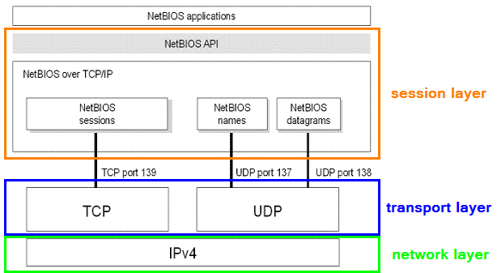

-p137,139: NetBIOS
NetBIOS → Network Basic Input Output System
The first version of NetBIOS(1983) developed as an API(not a protocol) and was not intended to be
encapsulated within TCP and UDP packets.
The second version of NetBIOS(1987) then was developed to work over
TCP/IP (this version of the service is also called NetBT, NBT)
The main purpose of NetBIOS is to allow
applications on different systems to communicate with one another over a Local Area Network(LAN)
NetBIOS is a
protocol used to both gather information and configure network devices (printers, switches, servers…). .
| layers |
TCP/IP |
ISO/OSI |
Protocols |
what they do |
| 5 |
Application |
Session |
NFS, SQL, RPC, NetBIOS |
establishes and maintains the connection between systems and formats the data for transfer between nodes
|
Every Windows system have the following information, that can supply when others query:
•
Hostname
• NetBIOS name
• Domain
•
Network
sharesNetBIOS Name Service (UDP:137) → NBNS has the same
purpose of a DNS record, it translates and maps a NetBIOS name to an IP address.
NetBIOS Datagram
Service (UDP:138) → NBDS permits to send and receive messages to a specific NetBIOS name or to all
NetBIOS names (broadcast of the datagram)
NetBIOS Session Service (TCP:139) → NBSS allows two
names to establish a reliable connection in order to exchange data
NetBIOS over TCP/IP
Before Windows 2000, SMB traffic requires the NetBIOS over TCP (NBT) protocol to work on a TCP/IP
transport.
NetBIOS over TCP traditionally uses the following ports:
nbname 137/UDP
nbname
137/TCP
nbdatagram 138/UDP
nbsession 139/TCP
Bibliography:
NetBios RFC:
https://tools.ietf.org/html/rfc1001NetBios RFC:
https://tools.ietf.org/html/rfc1002TCP/IP Fundamentals for
Microsoft Windows:
https://docs.microsoft.com/en-us/previous-versions/tn-archive/bb962072(v=technet.10)